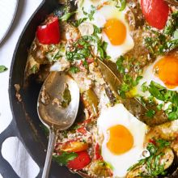
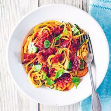
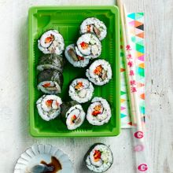
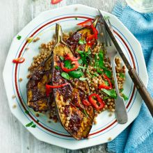
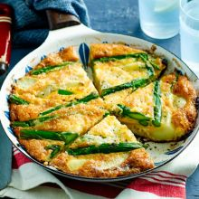

Lighter choices for a guilt-free mealtime. Try out inspirational healthy dishes, from puddings to pies.
Want to improve your cookery skills or expand your kitchen know-how? This section is the place to find all the step-by-step guides.
We're all about good recipes, and about quality home cooking that everyone can enjoy. Whether you're looking for some healthy inspiration or learning how to cook a decadent dessert, we've trustworthy guidance for all your foodie needs. Healthy Food Receipes.
All our recipes are tested thoroughly by us to make sure they're suitable for your kitchen at home. We know many of you are concerned about healthy eating, so we send them to a qualified nutritionist for thorough analysis too.
Some Dishes
Pisto con huevos

This traditional Spanish take on ratatouille uses delicious seasonal ingredients. Serve with country-style bread and fruity red wine
Specialities:
Creamy tomato courgetti

Four ingredients are all you need to make a filling, low calorie supper in minutes.
Specialities:
Smoked mackerel maki rolls

Make your own sushi for a low-calorie lunch you can bring to work. Be the envy of the office with these mackerel and veg rolls, don't forget the soy sauce!...
Specialities:
Miso aubergines

A really easy low-fat, low-calorie aubergine recipe with delicious umami flavours. This dish is so rich and meaty, it's hard to believe it's vegan!...
Specialities:
Asparagus and new potato frittata

A simple, low-calorie spring main that uses the season's finest ingredients and is ready in just 20 minutes...
Specialities:
Greek Garbanzo Bean Salad
Rich in protein and dietary fiber, this fresh-tasting salad provides 11% of your Daily Value (DV) for protein and 26% DV for dietary fiber.
Specialities:
Today's Popular